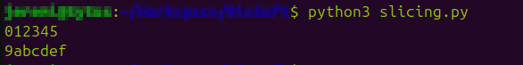
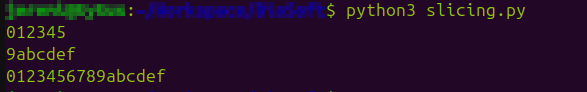
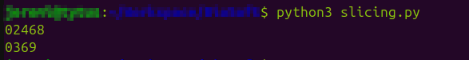
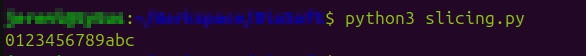

Typy danych I
Kolejny koncept programistyczny, który omówimy to typy danych.Wiesz już, jak przechowywać dane w zmiennych, a więc czas się dowiedzieć, co konkretnie można w nich przechowywać.
Każda zmienna ma swój typ.
I nie mowa tu o facetach...
Spotkaliśmy się już z dwoma spośród podstawowych typów danych:
- Liczby całkowite (integer)
- Tekst (string)
Zaczniemy od nich, a następnie przejdziemy do pozostałych typów danych.
Spis treści
Integer
Jest to typ danych odpowiadający liczbom całkowitym.
W Pythonie nazywany jest skrótowo
int.Zmienną typu
int można stworzyć poprzez przypisanie liczby całkowitej lub za pomocą polecenia int().
my_number = 12
second_number = int() # Automatycznie otrzyma wartość 0
Matematyka
Na wartościach tego typu można używać operatorów matematycznych:-
+- dodawanie -
-- odejmowanie -
*- mnożenie -
/- dzielenie -
//- dzielenie całkowite (wynik pozbawiony jest części po przecinku, np.10 / 4= 2.5, ale10 // 4= 2) -
**- potęgowanie -
%- modulo, czyli reszta z dzielenia (np.5 / 3= 1 r.2, zatem5 % 3= 2)
Nie ma operatora, który umożliwia pierwiastkowanie, ale istnieje na to sprytny sposób:
square_root_of_2 = 2 ** (1/2)
Przy okazji użyłem też operatorów otwarcia i zamknięcia nawiasu, których działanie, jak sądzę, jest oczywiste.
Przypomnienie ze szkoły na wszelki wypadek:
zatem
String
Typ danych służący do przechowywania tekstu.
Nazwa 'string' oznacza dosłownie sznurek. Bierze się ona z tego, że każdy string jest łańcuchem znaków (tudzież "sznurkiem znaków" jeśli wolisz 😉).
Znak jest to pojedyncza litera, cyfra itp.
W Pythonie string jest zwykle nazywany skrótowo
str.Wartość tego typu można stworzyć poprzez przypisanie tekstu otoczonego cudzysłowem, (pojedynczym lub podwójnym, nie ma to znaczenia. O ile jesteśmy konsekwentni) lub za pomocą polecenia
str().
hello = "Cześć!"
empty = str() # Pusty napis
Można również stworzyć string wielolinijkowy, o którym wspomniałem już w poprzednim temacie:
long = '''Ten tekst
jest trochę zbyt długi,
więc podzieliłem go na
kilka linijek.'''
Dane typu string można konkatenować (łączyć, concatenate) za pomocą operatora +:
a = "Hello"
b = " World!"
print(a + b)
Hello World!String można również powielić za pomocą operatora
*:
a = "Hello"
b = a * 3
print(b)
HelloHelloHelloWarto jeszcze zaznaczyć, że dane typu string są niemutowalne, czyli niezmienne.
W praktyce oznacza to, że nie da się ich zmodyfikować - jeśli chcemy np. zmienić jedną literę w jakimś napisie, to musimy cały wyrzucić i zastąpić nowym, ze zmienioną literą.
W poniższych podrozdziałach opiszę cały szereg możliwości, które udostępnia nam string.
Metody
Dane typu string posiadają cały zestaw metod, czyli specjalnych poleceń, które służą głównie do stworzenia nowego tekstu na podstawie tego, na którym używamy polecenia.W związku z niemutowalnością danych typu string, musimy pamiętać, że zawartość zmiennej nie zmieni się sama.
A więc po użyciu takiej metody zwykle chcemy przypisać wynik jej działania do nowej zmiennej (albo i tej samej, zastępując w ten sposób oryginał).
text = "mój napis"
TEXT = text.upper()
print(text)
print(TEXT)
mój napisMÓJ NAPISUżyłem właśnie metody
upper(), która na podstawie napisu zawartego w zmiennej text,
stworzyła nowy, zapisany wielkimi literami.Zauważ, że zmienna
text nie zmieniła swojej zawartości. Wynik działania metody musiałem zapisać w zmiennej TEXT.Co prawda, jeśli nie byłby mi już potrzebny oryginalny napis, mógłbym zrobić tak:
text = "mój napis"
text = text.upper()
print(text)
MÓJ NAPISKilka co bardziej użytecznych metod, których można użyć na danych typu string znajdziecie poniżej:
-
upper()- zmienia wszystkie litery na wielkie -
lower()- zmienia wszystkie litery na małe -
capitalize()- zmienia pierwszą literę na wielką, np."ania ma kota".capitalize()="Ania ma kota" -
title()- zmienia pierwszą literę każdego słowa na wielką, np."ania ma kota".title()="Ania Ma Kota" -
replace(x, y)- zmienia wszystkie wystąpienia litery/słowaxnay, np."ania ma kota".replace('a', '*')="*ni* m* kot*" -
count(x)- zwraca liczbę wystąpień litery/słowax, np."ania ma kota".count('a')=4
Takich metod istnieje znacznie więcej. Po kompletną listę odsyłam do dokumentacji Pythona - choć na razie pewnie ci się nie przyda.
Slicing
Slicing (ang. dosł. kroić) to technika pozwalająca nam "wyciąć" z dłuższego tekstu jakiś jego fragment.W tym celu wykorzystuje się operator nawiasów kwadratowych.
Trzeba tu wspomnieć, że każdy znak w string-u - łańcuchu znaków - ma przypisany swój numer, nazywany indeksem (index).
W języku Python pierwszy znak ma zawsze indeks 0.
Slicing odbywa się poprzez umieszczenie indeksów pierwszego oraz ostatniego znaku we fragmencie, który chcemy wyciąć, wewnątrz operatora nawiasów kwadratowych - oddzielonych dwukropkiem.
chain = "0123456789abcdef"
part1 = chain[0:6]
part2 = chain[9:16]
print(part1)
print(part2)

Ale zaraz. Czy aby pierwszy fragment nie miał obejmować cyfr od 0 do 6?
Okazuje się, że dla Pythona "od 0 do 6" oznacza wszystko pomiędzy 0 a 6, ale z wyłączeniem samego 6.
Trzeba o tym pamiętać, inaczej w kółko będziemy gubili ostatnią literę...
Jeśli chcemy wyciąć fragment obejmujący początek lub koniec stringu, możemy pominąć indeks pierwszego lub ostatniego znaku:
chain = "0123456789abcdef"
part1 = chain[:6]
part2 = chain[9:]
part3 = chain[:] # Whole string from start to beginning!
print(part1)
print(part2)
print(part3)

Możemy też wyciąć co drugi albo co trzeci itd. znak, dodając trzecią liczbę:
chain = "0123456789abcdef"
part1 = chain[:10:2]
part2 = chain[:10:3]
print(part1)
print(part2)

No i na koniec, możemy skorzystać z indeksów ujemnych.
-n-ty indeks oznacza n-ty indeks od końca:
chain = "0123456789abcdef"
# 🠉-3
part1 = chain[:-3] # 16-3 = 13
print(part1)
A co się stanie jeśli zamienimy indeksy początku i końca miejscami?
Przekonaj się sam/a...
F-string
Czasem możesz potrzebować napisu, który zawiera wartość jakiejś zmiennej albo wyrażenia (np. matematycznego).Proponuję, żebyś spróbował/a teraz wykonać proste ćwiczenie:
Dokończ poniższy program tak, aby wypisać oczekiwany wynik:
(I nie chodzi tu po prostu o wpisanie wyniku "na sztywno" - spróbuj faktycznie wykorzystać zmienną
name)
name = "Andrzej"
print(???)
Wynik:Cześć, Andrzej!Rozwiązanie (naciśnij aby rozwinąć)
Można to zrobić na kilka sposobów:print("Cześć, " + name + "!")
Albo:
print("Cześć, ", name, "!", sep="")
W powyższym rozwiązaniu wykorzystałem dwie właściwości polecenia
print(), o których być może jeszcze nie wiesz:
-
Podanie do polecenia kilku wartości po przecinku sprawi, że
print()połączy te wartości ze sobą i wypisze to, co wyjdzie -
opcja
sep=pozwala nam określić, w jaki sposób te wartości zostaną połączone. Domyślnieprint()wstawia pomiędzy wartości jedną spację - ja natomiast kazałem mu zamiast tego wstawiać pusty string, czyli po prostu nic.
F-string to "formatowany string" (formatted string literal). Można do niego "wstawić" zmienną lub wyrażenie.
Tworzy się go poprzez dodanie litery
f przed cudzysłowem.
f"To jest formatowany string!"
Co prawda nie ma powodu, żeby powyższy string był f-stringiem, a być może wręcz nie powinien nim być - ze względu na
przejrzystość kodu oraz kilka właściwości f-stringów, których tu nie omawiam, zalecam,
abyś używał/a ich tylko wtedy, gdy masz ku temu powód.Przyjrzyjmy się więc przykładowi, w którym ich użycie jest uzasadnione, na przykład temu z powyższego ćwiczenia:
name = "Andrzej"
print( f"Cześć, {name}!" )
Cześć, Andrzej!Jak widzisz, użyłem nawiasu klamrowego (
{}) aby umieścić wartość zmiennej name wewnątrz f-stringu.W ten sposób można też wstawić zmienną innego typu:
age = 14
print( f"Andrzej ma {age} lat." )
Andrzej ma 14 lat.To na razie tyle jeśli chodzi o dane typu string - co prawda kryją one jeszcze wiele tajemnic, ale o tym opowiem później, w lekcji dodatkowej Typy danych - dodatek.
Na razie jednak zapoznaj się z pozostałymi typami danych.
Float
Float, podobnie jak Integer, reprezentuje liczby.
Różnica polega na tym, że
int służył do liczb całkowitych, natomiast float reprezentuje liczby zmiennoprzecinkowe,
czyli niecałkowite.Wartość typu float można utworzyć poprzez przypisanie liczby z wartością po przecinku - a właściwie, to po kropce - lub za pomocą polecenia
float().
floating_point_number = 12.5
another_number = float() # Automatycznie otrzyma wartość 0.0
Zauważ, że nie możesz zapisać wartości z użyciem przecinka, to musi być kropka.
floating_point_number = 12,5
Powyższy kod co prawda nie zwraca błędu... ale uzyskana wartość nie jest liczbą typu float. Jest to tuple,
który poznasz dopiero w następnej lekcji.Na wartościach typu float można używać tych samych operatorów matematycznych, co w przypadku integer: Matematyka
Boolean
Boolean jest bardzo prostym typem danych. Może on przyjąć tylko dwie wartości:
Prawda (
True) albo fałsz (False).W Pythonie nazywa się go skrótowo
bool.Wartość tego typu można utworzyć poprzez przypisanie jednej z powyższych wartości lub za pomocą polecenia
bool():
boolean_true = True
boolean_false = False
default_bool = bool() # Automatycznie otrzyma wartość False
Zwróć uwagę, że `True` oraz `False` zawsze musi być pisane z wielkiej litery.Na tą chwilę ten typ danych zapewne nie wydaje się zbyt użyteczny, ale zapewniam, że będzie on nam bardzo potrzebny w przyszłości, w trakcie lekcji o instrukcjach warunkowych.
None
None, a właściwie NoneType, jest szczególnym typem danych, który nie służy do przechowywania danych.Właściwie, można powiedzieć, że służy właśnie do tego, żeby nie przechowywać żadnych danych.
Jest to po prostu wartość zastępcza.
Jeśli chcemy, na przykład, stworzyć zmienną, w której na razie nic nie ma, (ale będzie) to używamy właśnie NoneType.
Typ ten może przyjąć tylko jedną wartość - obiekt
None.Możemy utworzyć wartość tego typu poprzez przypisanie tego właśnie obiektu:
placeholder = None
Nie jest możliwa konwersja do ani z typu NoneType.Konwersja? A no właśnie...
Konwersja typów
Czasem konieczna jest zamiana danych jednego typu w inny.
Na przykład wyobraźmy sobie, że mamy poniższe zmienne:
number = 15
number2 = "7"
I chcielibyśmy je do siebie dodać...
number + number2
Traceback (most recent call last):
File "<stdin>", line 1, in <module>
TypeError: unsupported operand type(s) for +: 'int' and 'str'
Oj.Jak być może już się domyśliłeś/aś, ten błąd spowodowany jest tym, że pierwsza zmienna jest typu integer, a druga string (ponieważ przypisana wartość znajduje się w cudzysłowie).
Python nie wie, w jaki sposób ma dodać tekst do liczby. (bo i jaki powinien być wynik? 22? A może "157"? A może... 70...? 😉😉)
Więc co teraz?
Konwersja do typu integer
Konwersji do typu integer dokonuje się zazwyczaj za pomocą poleceniaint().
int(2) # int na int, nic się nie zmienia
int(2.6) # float na int - uwaga, zaokrągla w dół, (obcina, tak właściwie) tym samym zwracając 2
int("3") # string na int
int(True) # bool na int, o tym powiem później
int("2.6") # błąd - tekst w podanym stringu nie odpowiada liczbie całkowitej, co najwyżej zmiennoprzecinkowej
Tak więc nasz problem można rozwiązać w poniższy sposób:
number = 15
number2 = "7"
number + int(number2)
22
Konwersja do typu string
Konwersji do typu string dokonuje się zazwyczaj za pomocą poleceniastr().Jak na razie omawialiśmy tylko kilka podstawowych typów, ale przekonasz się w przyszłości, że do stringu można konwertować praktycznie każdy typ, jaki wpadnie ci w ręce.
Choć uwaga, bo rezultat czasem może cię zaskoczyć...
str(2) # int na string, zwraca "2"
str(2.6) # float na string, zwraca "2.6"
str("test") # string na string, nic się nie zmienia
str(True) # bool na string, zwraca "True"
str(str)
''' class na string... Ktoś może zauważyć, że to w ogóle nie jest konwersja typów.
Cóż... class to rzeczywiście nie jest żaden typ, ale ten kurs nie obejmuje programowania obiektowego,
więc nie będę tłumaczył czym naprawdę jest... '''
```
Konwersja do typu float
Konwersji do typu float dokonuje się zazwyczaj za pomocą poleceniafloat().
float(2) # int na float, zwraca 2.0
float(2.6) # float na float, nic się nie zmienia
float("3.6") # str na float, zwraca 3.6
float(True) # bool na float, o tym powiem za chwilę
float("2") # str na float - co prawda brakuje części po przecinku, ale Python może się "domyślić", że powinno tam być ".0" - a więc zwraca 2.0
Konwersja do typu Boolean
Konwersji do typu Boolean dokonuje się zazwyczaj za pomocą poleceniabool().Zanim przejdziemy do przykładów, od razu wyjaśnię, że owszem, jak już widzizeliśmy, dane logiczne, prawda lub fałsz, można konwertować do typów numerycznych, (np. int, float) choć być może nie wydaje się to oczywiste.
Wynika to po części z tego, że wewnętrznie, komputer "zapamiętuje" prawdę lub fałsz jako liczby 1 lub 0.
Tak więc
int(True) zwróci nam 1, a int(False) 0.
bool(True) # bool na bool, nic się nie zmienia
bool(0) # int na bool, zwraca False
bool(1) # int na bool, zwraca True
bool(0.0) # float na bool, zwraca False
bool(12) # float na bool, zwraca True
Ostatni przykład może być zaskakujący - jak się okazuje, przyjmuje się, że przy konwersji,
0 (lub 0.0) odpowiada False, a każda inna liczba odpowiada True.Jednak to nie wszystko.
bool("False") # str na bool, zwraca... True???
Powyższy przykład jest dość, lub nawet bardzo, dezorientujący, szczególnie, że str(False) zwracało przecież "False".Zasadniczo, konwersja stringów do booleanów nie ma zbyt wielu zastosowań, (bo w gruncie rzeczy, jak ocenić czy słowo "cześć" jest raczej prawdziwe czy fałszywe?) i właściwie mogłaby być zwyczajnie niedozwolona...
Ale jednak istnieje jeden przykład sytuacji kiedy możemy chcieć sprawdzić, czy napis jest "prawdziwy" - sprawdzanie, czy string jest pusty.
Ze względu na to zastosowanie, konwersja
str do bool jest możliwa i zwraca False kiedy string jest pusty,
a True kiedy zawiera cokolwiek, choćby nawet było to "False".
bool("") # str na bool, zwraca False (string jest pusty)
bool("cokolwiek") # str na bool, zwraca True
Z tą wiedzą jesteś teraz gotowy/a aby przejść do następnej lekcji, Typy danych II ...
...Ale zaraz, a może by ją tak utrwalić, wykonując kilka ćwiczeń?
Ćwiczenie 1 - Obliczanie pola koła
Ćwiczenie 2 - Liczenie liter w zdaniu
Ćwiczenie 3 - Dodawanie cyfr To zadanie jest szczególnie trudne
Do spisu treści
Napisane przez:
Jeremi Maciejewski
Jeremi Maciejewski